Consulta y idea


Tatuaje tradicional, japonés y diseño a medida
Tu idea llevada a la piel.
Consulta y idea

Diseño de la pieza

Sesión final
30 años de oficio
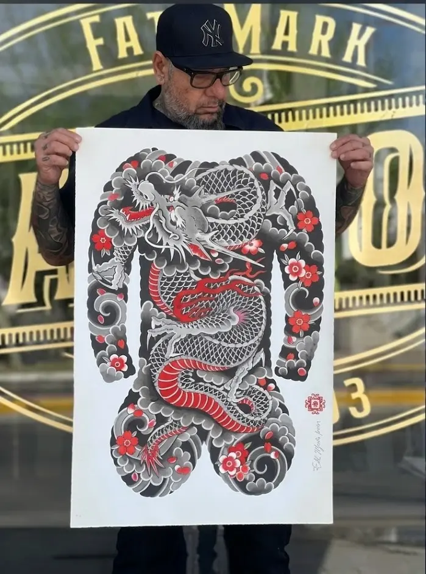
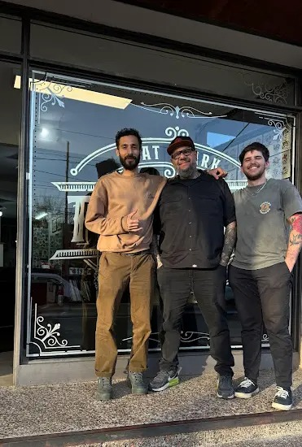
Fat Mark es fundador del estudio y referente del tatuaje tradicional, con más de 30 años de trayectoria en el oficio.
Especializado en estilos americano y japonés, su trabajo se caracteriza por la solidez, la durabilidad y la calidad en cada pieza.
Tradición, oficio y pasión por el tatuaje.

Proceso de trabajo
01
Base clara y ubicación.
02
Posición y lectura del diseño.
03
Líneas limpias y estructura firme.
04
Contraste, detalle y terminación.
 Etapa 1
Brazo limpio
Etapa 1
Brazo limpio
 Etapa 2
Stencil
Etapa 2
Stencil
 Etapa 3
Líneas base
Etapa 3
Líneas base
 Etapa 4
Pieza final
Etapa 4
Pieza final
Piezas recientes
Separamos la galería en tradicional y japonés para que la lectura sea más clara y siga con la misma atmósfera de la landing.
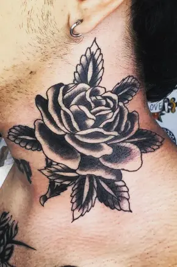
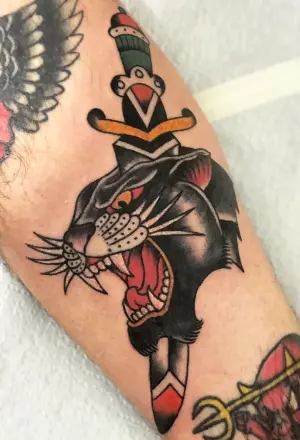
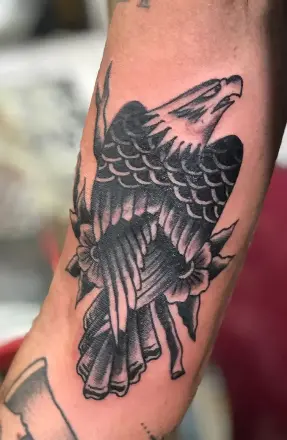
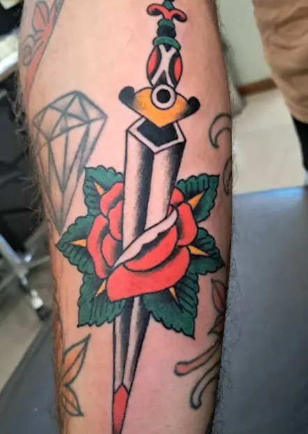
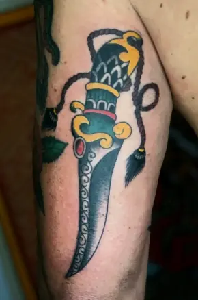
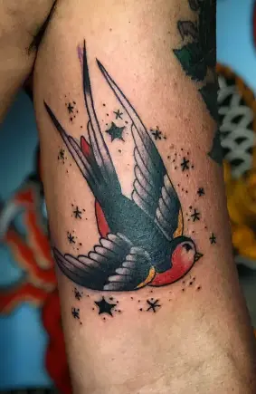
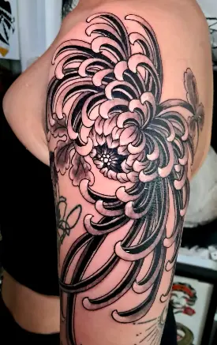
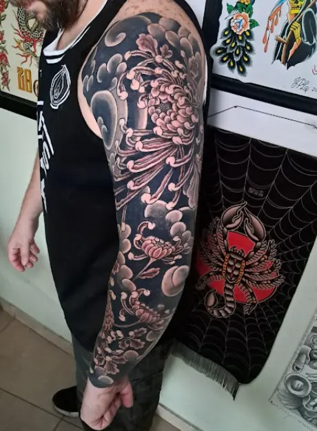
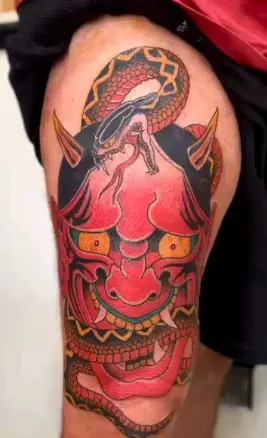
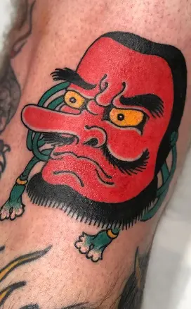
Experiencias reales
Micaela R.
Me sentí cómoda desde el primer momento. Entendió perfecto la idea y la pieza quedó con mucha más presencia de la que imaginaba.
Facundo L.
El proceso fue súper claro y prolijo. Se nota que cuida la composición, el contraste y que cada línea tenga sentido.
Camila S.
Me encantó la calma con la que trabaja. No fue solo tatuar, fue bajar bien la idea y convertirla en una pieza que realmente me representa.
Ubicación en Villa Allende
El estudio se encuentra en Villa Allende, Córdoba, y trabaja con atención por turno. Usá el mapa para ubicarte y coordiná antes de acercarte para asegurar una mejor experiencia.
Abrir en Google Maps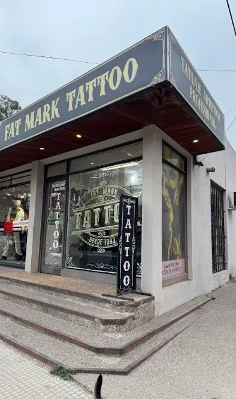
Reserva tu turno
Dejá tus datos, referencias y una idea aproximada de la pieza. Esta primera versión deja preparado el flujo de consulta para conectarlo luego a mail, WhatsApp o turnero.
Instagram @fatmark_desde1993
Zona Villa Allende
WhatsApp 351 230 5175
Atención Solo con turno previo